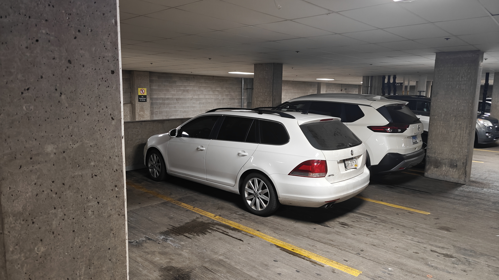

Vasholz Portfolio
Design Research · Human–AI Systems

Ariel Project
Independent research testing epistemic restraint in large language models. I examined whether AI can hold moral tension without defaulting to closure, using constraint-based prompting across philosophy and comedy texts.
View Case Study
Usability Evaluation
This group project looked at how users interacted with the Yacht Scoring website when trying to register for races.
View Report
SilentAid UX Case Study
Graduate UX project designing a discreet phone + watch safety tool for domestic violence situations. Includes research insights, prototyping process, and hi-fi design updates.
View Case Study